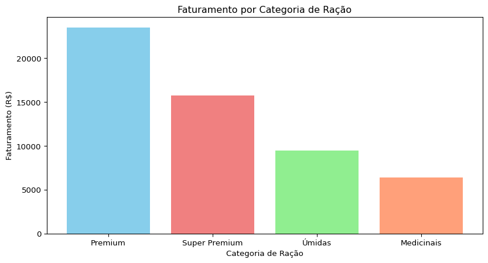
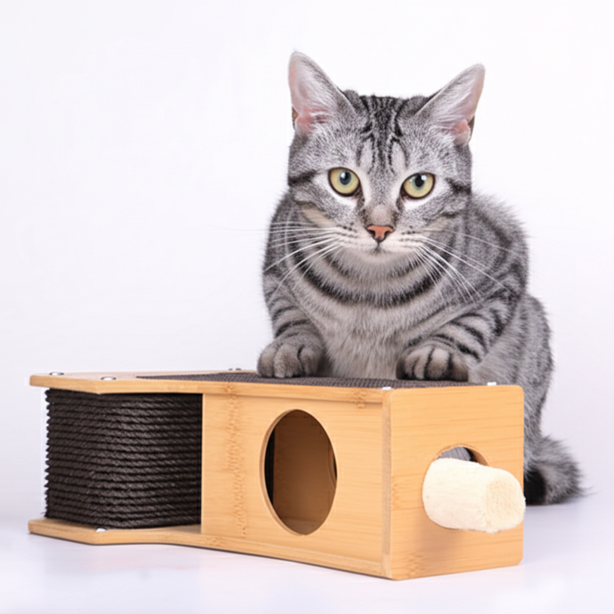

Gatito Petshop
Allan Spadini
Resumo Executivo - Gatito Petshop (Março/2025)
Faturamento total: R$ 127.845,00
Crescimento de 8,3% em relação ao ano anterior
Ticket médio: R$ 98,35 (aumento de 3,7%)
Faturamento com rações na vendas por categoria

Faturamento com arranhadores na vendas por categoria

- Arranhadores Torre: R$4.860,00 - Arranhadores Parede: R$1.440,00 - Arranhadores Tapete: R$2.700,00
Faturamento com brinquedos na vendas por categoria
Brinquedos representam 12% do faturamento total.
Rações lideram com 62% do faturamento.
Arranhadores representam 15% do faturamento.
Produtos de Previsão de Reposição Urgente na Análise de Estoque
Atenção aos arranhadores de parede: nível crítico.
Nova remessa de arranhadores de parede: 10/04/2025.
Risco de perda de vendas devido à falta de estoque.
Desempenho das Vendas Online vs. Loja Física
Loja física: 60% do faturamento (R$76.707,00)
E-commerce: 30% do faturamento (R$38.353,50)
Marketplace: 10% do faturamento (R$12.784,50)
Análise da Concorrência
Nossos diferenciais: variedade e atendimento especializado.
Preços 5% superiores ao Pet Feliz, mas melhor percepção de qualidade.
Miau Center: campanha agressiva de descontos em rações premium.
Impacto das Ações de RH
Programa de fidelidade: 65% das vendas de rações Super Premium.
“Semana do Gato Saudável”: aumento de 22% nas vendas de rações Super Premium.
Desconto de 15% nos arranhadores Torre Luxo: vendas adicionais.
Os indicadores financeiros estão alinhados com as metas?
Faturamento superou a meta mensal em 2,3%.
ROI foi de 18,5%, superando a meta de 17%.
Custos operacionais aumentaram 5,1% devido à contratação de um novo funcionário.
Tendências de Consumo Promissoras para os Próximos Meses
Crescimento contínuo nas vendas online (13,2%).
Brinquedos com crescimento de 18,7% no e-commerce.
Sucesso de cupons como “GATITO10” em compras online.
Reação dos Gatos aos Produtos
Ração premium seca: comer tudo em minutos.
Brinquedos com catnip: rolar no chão e miar.